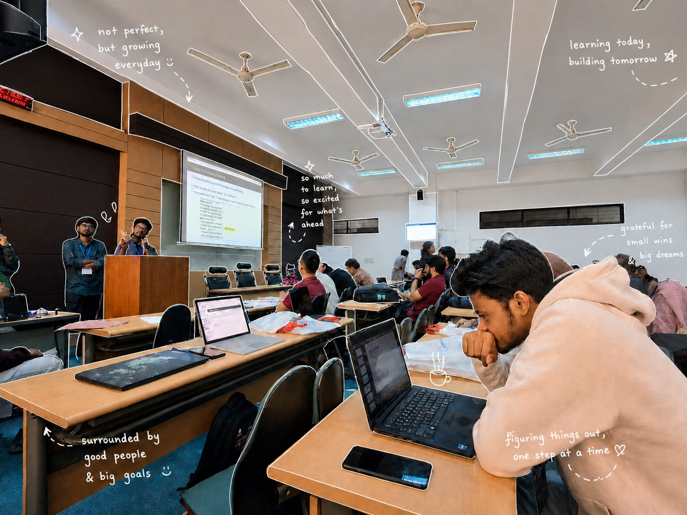

MY LIFE STORY
My life story (so far)

A friend once reminded me that my story is what sets me apart. For a long time, I hesitated to embrace it — but they were right. So, here is a short, honest account of how I got here.
I was born into a lower-middle-class family in a small village in Bangladesh.
There weren’t good schools nearby, so at eight, I moved away from my parents to live with my maternal uncle in the city.
School was difficult for me. For years, I failed term exams and barely passed my finals. I never repeated a grade, but I came close.
Things changed in grade nine. I became the class topper and the class captain. Being responsible for others pushed me to take responsibility for myself. I began taking my studies seriously and became more involved in student leadership.
In grade ten, I found something I loved: writing. I started with a short story, then began writing blog posts.
After high school, I took a less conventional path. I entered grade eleven and also enrolled in a four-year Computer Science program. Looking back, I understand why that decision might have seemed unwise. But it changed the direction of my life, and I’m grateful to my younger self for taking that chance.
At the time, I knew very little about computer science. Then I bought my first computer and fell in love with it. I began learning to program and discovering that I could use this machine to solve problems.
I still remember taking Harvard’s CS50 online. I spent much of my day studying, working through assignments, and trying to understand why my code didn’t work. Some nights, I slept only six hours because I wanted to keep going. After six months, I completed the course and earned my certificate.
As I learned more, I became curious about a different question: how could machines learn?
That curiosity led me to an online machine learning course from Stanford. I wanted to understand how a computer could learn from examples and use that knowledge to do something useful.
Eventually, I wanted to do more than complete courses. I wanted to build something of my own.
That became Toolly, a website bringing AI tools, platforms, and learning resources together in one place. It grew to around 4,000 monthly visitors and is now open source.
Building it helped me discover how much I enjoy the whole process: understanding a problem, making a product, talking with customers, and trying to sell what I’ve built.
Today, I’m building ReWoo, leading product development as CTO at FinAI8, and working as a Student Researcher at ELITE Research Lab.
There’s another part of my life that matters just as much: reading.
I read whatever catches my curiosity—fiction, science, technology, philosophy, world classics, and literature from different places. I don’t like limiting myself to one subject.
For a long time, books were my closest friends. I spent hours with them, finding ideas and perspectives I might never have encountered otherwise. Books make for great friends.
Writing gives me a place to think about what I’ve read, what I’m learning, and what I’m trying to build.
That’s what I want to share here.
When I do deep work, I listen to music to stay focused. You can check out my playlists on my Spotify account.
I spent a lot of time reading. My only real friends were books. Books make for great friends.
Here is the document where I’ll keep track of all the books I’ve read!
Open →